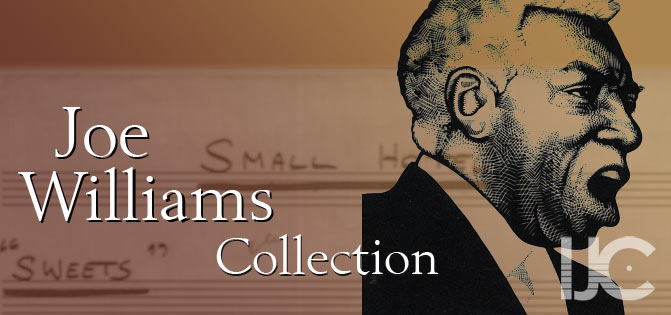

---
# IJC
---
Joe Williams Discography - International Jazz Collections (IJC) - University of Idaho Library
{% include headertocontent.html %}
{% include menu.txt %}

Recordings
Partial Discography12
- 1955: A Night At Count Basie’s (Vanguard)
- 1955: Count Basie Swings/Joe Williams Sings (Clef)
- 1956: The Greatest! Count Basie Wings/Joe Williams Sings Standards (Verve)
- 1956: with Count Basie, Ella Fitzgerald One O’Clock Jump (Columbia)
- 1956: Joe Williams Sings Everyday (Regent)
- 1958: Man Ain’t Supposed To Cry (Roulette)
- 1959: with Basie Memories Ad Lib (Roulette)
- 1959: with Basie Everyday I Have The Blues (Roulette)
- 1959: Joe Williams Sings About You! (Roulette)
- 1960: That Kind Of Woman (Roulette)
- 1960: with Count Basie Just The Blues (Roulette)
- 1961: Sentimental And Melancholy (Roulette)
- 1961: Together (Roulette)
- 1961: Have A Good Time (Roulette)
- 1962: A Swingin’ Night At Birdland (Roulette)
- 1963: One Is A Lonesome Number (Roulette)
- 1963: New Kind Of Love (Roulette)
- 1963: Jump For Joy (RCA)
- 1963: Joe Williams At Newport ‘63 (RCA)
- 1964: Me And The Blues (RCA)
- 1965: Song Is You (RCA)
- 1965: The Exciting Joe Williams (RCA Victor)
- 1966: Presenting Joe Williams And The Thad Joes/Mel Lewis Jazz Orchestra (Solid State)
- 1968: Something Old, New And Blue (Solid State)
- 1971: Live In Las Vegas (Monad)
- 1973: Joe Williams Live (Fantasy)
- 1979: with Dave Pell’s Prez Conference Prez & Joe (GNP)
- 1983: Nothin’ But The Blues (Delos)
- 1985: I Just Wanna Sing (Delos)
- 1987: Every Night: Live At Vine Street (Verve)
- 1987: Ballad And Blues Master (Verve)
- 1989: In Good Company (Verve)
- 1990: That Holiday Feelin’ (Verve)
- 1992: Live At Orchestra Hall, Detroit (Telarc)
- 1993: Here’s To Life (Telarc)
- 1994: Feel The Spirit (Telarc)
References
- The Encyclopedia of Popular Music pp. 5850
- Allmusic.com
{% include marketing.txt %}
{% include helpcontainer.html %}
{% include footer.txt %}
{% include final.js %}